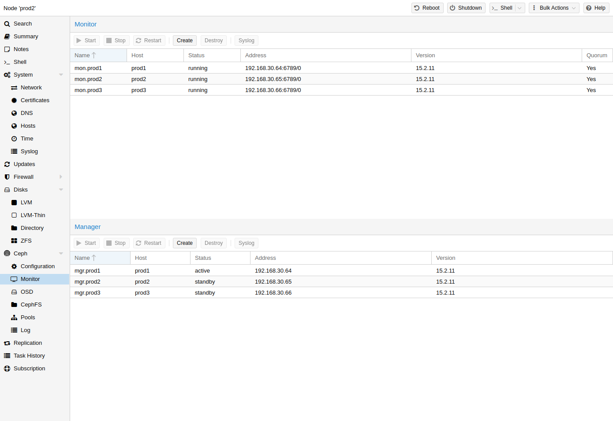

The Ceph Monitor (MON) [19] maintains a master copy of the cluster map. For high availability, you need at least 3 monitors. One monitor will already be installed if you used the installation wizard. You won’t need more than 3 monitors, as long as your cluster is small to medium-sized. Only really large clusters will require more than this.
On each node where you want to place a monitor (three monitors are recommended), create one by using the Ceph → Monitor tab in the GUI or run:
pveceph mon create
To remove a Ceph Monitor via the GUI, first select a node in the tree view and go to the Ceph → Monitor panel. Select the MON and click the Destroy button.
To remove a Ceph Monitor via the CLI, first connect to the node on which the MON is running. Then execute the following command:
pveceph mon destroy
At least three Monitors are needed for quorum.